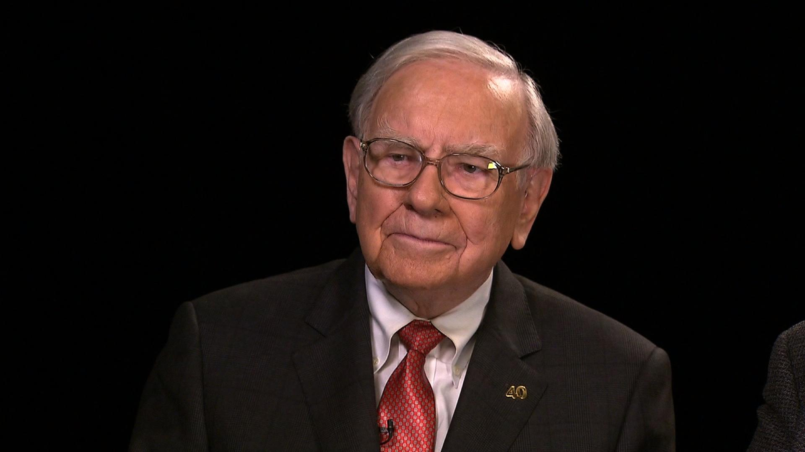

BIODATA IDOLA SAYA
Warren Buffett
Warren Buffett adalah salah satu investor paling sukses dan dihormati di dunia. Lahir pada tahun 1930 di Omaha, Nebraska, Buffett menunjukkan bakat bisnis sejak usia muda. Ia mulai berinvestasi di pasar saham pada usia 11 tahun dan mengajukan pengembalian pajak pertamanya pada usia 13 tahun.Dikenal sebagai "Oracle of Omaha," Buffett telah membangun reputasinya melalui kepemimpinannya di Berkshire Hathaway, sebuah konglomerat yang ia ubah dari perusahaan tekstil yang sedang kesulitan menjadi salah satu perusahaan holding paling bernilai di dunia. Strateginya berfokus pada investasi jangka panjang di perusahaan-perusahaan berkualitas tinggi dengan model bisnis yang kuat dan manajemen yang kompeten.Gaya hidup Buffett terkenal sederhana, bertolak belakang dengan kekayaannya yang besar. Ia masih tinggal di rumah yang sama yang dibelinya pada tahun 1958 dan dikenal menyukai makanan cepat saji. Kesederhanaan ini memperkuat citranya sebagai investor yang bijaksana dan berpijak pada bumi
Diakui secara global sebagai salah satu individu terkaya dengan aset miliaran dolar
Mendapat julukan ini karena keputusan investasi yang sangat sukses dan bijaksana.
Memimpin perusahaan investasi terbesar dan tersukses di dunia.